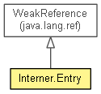

org.eclipse.net4j.util.ref
Class Interner.Entry<E>
java.lang.Object
 java.lang.ref.Reference<T>
java.lang.ref.WeakReference<E>
org.eclipse.net4j.util.ref.Interner.Entry<E>
java.lang.ref.Reference<T>
java.lang.ref.WeakReference<E>
org.eclipse.net4j.util.ref.Interner.Entry<E>
- Enclosing class:
- Interner<E>
- protected static class Interner.Entry<E>
- extends WeakReference<E>

A weak reference holder that caches the hash code of the referent and is chained in the Interner.entries to handle collisions.
hashCode
public final int hashCode
next
public Interner.Entry<E> next
Interner.Entry
public Interner.Entry(E object,
int hashCode,
ReferenceQueue<? super E> queue)
getNextEntry
public Interner.Entry<E> getNextEntry()
toString
public String toString()
- Overrides:
toString in class Object
Copyright (c) 2011, 2012 Eike Stepper (Berlin, Germany) and others.